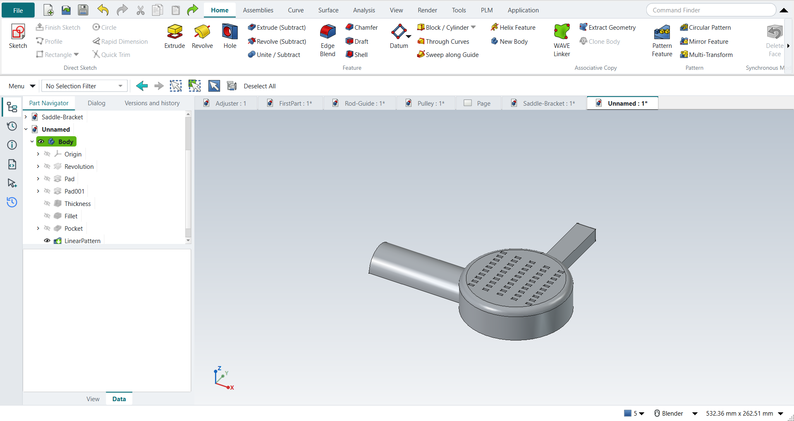

Tutorial F: Dryer Housing
| Book |
Shih, Parametric Modeling with Siemens NX, ch. 12 |
| You learn |
Shell, Edge Blend, a pattern leader, Pattern Feature in two directions |
| Sizes |
The text gives R6.35, 12.7, 139.7, R3.81, 3.175 and 3.81 mm and the pattern (5 × −14.73 mm, 10 × −6.35 mm), the book’s inch values typed in mm. Every profile is in figures only, so the housing is a simplified one: an R50.8 × 31.75 mm drum, a 19.05 mm wide handle, an R19.05 half nozzle. |

In short
-
The drum by Revolve, the handle and the nozzle by Extrude.
-
Shell (3.175 mm walls), then Edge Blend on the handle.
-
A vent as the pattern leader; Pattern Feature with Direction 2 ticked: 5 × 10.
The swept cut along the rim (F27) is skipped: its guide and section are in figures only.
Step by step
| # | In the book (NX) | In FreeCAD NX-Style | Result | Notes |
|---|---|---|---|---|
F1 |
File > New, Model template |
Ctrl+N |
same |
|
F2 |
Revolve, YZ plane of the datum CSYS |
ribbon 'Home › Feature > Revolve', plane row + MB2 |
same |
picked YZ-plane (Base plane) |
F3 |
Profile, then Fillet R0.25 between the top line and the side |
Z key + MB1 clicks + MB2, F key; sizes applied |
differs |
the book’s profile (an arc and stepped lines) is figure-only; a filleted rectangle stands in. The fillet radius is typed after picking in FreeCAD |
F4 |
Specify Vector = Z axis, 0..360°, OK |
axis 'Base Z-axis', MB2 = OK |
same |
volume 254722.5 mm^3, expected 254722.5; 1 solid(s) |
F5 |
Dryer handle: Extrude (X), XY plane |
X key, plane row + MB2 |
same |
picked XY-plane (Base plane) |
F6 |
Handle outline, seven dimensions |
R key + 2 MB1 clicks + MB2; sizes applied |
differs |
the book’s handle (three inclined lines, seven dimensions) is figure-only; a 0.75 x 3.5 bar stands in |
F7 |
Boolean Unite, End = 0.5, OK |
'lengthEdit' = 12.7 mm, MB2 = OK |
same |
volume 273230.4 mm^3, expected 273230.4; 1 solid(s) |
F8 |
Sketch on the YZ plane |
ribbon 'Home › Direct Sketch > Sketch', plane row + MB2 |
same |
picked YZ-plane (Base plane) |
F9 |
Arc by centre and endpoints (180°), then a Line closing it |
A key + 3 MB1 clicks + MB2, L key + 2 MB1 clicks + MB2; sizes applied |
same |
arc tool True, line tool True; the book projects the bottom edge first (shown in tutorial E); here the arc sits on the bottom line by its coordinates |
F10 |
Reverse Direction, End 5.5, Boolean Unite, OK |
sketch selected + ribbon 'Home › Feature > Extrude', 'checkBoxReversed' on, 'lengthEdit' = 139.7 mm, MB2 = OK |
same |
volume 324426.0 mm^3, expected 324425.9; 1 solid(s) |
F11 |
Edge Blend, Circular, select the handle’s edges |
4 edges selected + ribbon 'Home › Feature > Edge Blend' |
differs |
the book’s 13 edges are picked from a figure; the outer edges of the handle’s end stand in (FreeCAD’s unrefined shape may split one). FreeCAD takes the edges selected before the command |
F12 |
Radius 1 = 0.15, OK |
'filletRadius' = 3.81 mm, MB2 = OK |
same |
volume 324249.4 mm^3, expected 324249.3; 1 solid(s) |
F13 |
Shell: pick the two flat open faces |
bottom ['Face2'] + nozzle end ['Face9'] selected + ribbon 'Home › Feature > Shell' |
same |
FreeCAD calls Shell 'Thickness' |
F14 |
Thickness 0.125, OK |
'Value' = 3.175 mm, 'Make thickness inwards' on (default), MB2 = OK |
limit |
FreeCAD 1.1.4 does not shell the part after the edge blend (FreeCAD: 'Input error: Failed to make thick solid'); the same faces and thickness work before the blend (next steps). NX shells it in the book’s order |
F15 |
Workaround: undo the shell and the blend |
Ctrl+Z x2 |
differs |
back to the part before the edge blend |
F16 |
Workaround: Shell first, the same two faces |
bottom ['Face10'] + nozzle end ['Face9'] selected + ribbon 'Home › Feature > Shell' |
same |
FreeCAD calls Shell 'Thickness' |
F17 |
Thickness 0.125, OK (before the blend) |
'Value' = 3.175 mm, 'Make thickness inwards' on (default), MB2 = OK |
same |
volume 75365.9 mm^3 (solid 324425.9); outer box kept True; 1.6 mm inside each wall is material [True, True, True, True], deeper in is hollow [True, True, True, True, True] |
F18 |
Workaround: Edge Blend after the shell, the handle’s outer end edges |
4 edges selected + ribbon 'Home › Feature > Edge Blend' |
differs |
the book’s 13 edges are picked from a figure; the outer edges of the handle’s end stand in (FreeCAD’s unrefined shape may split one). FreeCAD takes the edges selected before the command |
F19 |
Radius 1 = 0.15, OK (after the shell) |
'filletRadius' = 3.81 mm, MB2 = OK |
limit |
volume 75352.7 mm^3, 13.24 mm^3 rounded off; inside the previous box True; feature valid False; no Part API reference (it failed: class StdFail_NotDone BRep_API: command not done); FreeCAD 1.1.4 refuses this round on the shelled walls |
F20 |
Workaround: Edge Blend again with a smaller radius |
4 edges selected + ribbon 'Home › Feature > Edge Blend' |
differs |
the book’s 13 edges are picked from a figure; the outer edges of the handle’s end stand in (FreeCAD’s unrefined shape may split one). FreeCAD takes the edges selected before the command |
F21 |
Radius 1 = 0.10, OK (after the shell) |
'filletRadius' = 2.54 mm, MB2 = OK |
differs |
volume 75284.3 mm^3, expected 75284.3; 1 solid(s); the workaround changes the design: R0.10 instead of the book’s R0.15 |
F22 |
Pattern leader: Extrude on the top face, Subtract |
select ['Face26'] + ribbon 'Home › Feature > Extrude (Subtract)' |
differs |
the book orients the view to Top first; FreeCAD’s sketch opens looking at the face |
F23 |
Rectangle to the right of the CSYS: the small vent |
R key + 2 MB1 clicks + MB2; sizes applied |
same |
the slot size is figure-only: 0.20 x 0.08 here |
F24 |
Reverse Direction into the solid, End 0.15, OK |
'lengthEdit' = 3.81 mm, MB2 = OK |
same |
volume 75251.5 mm^3, expected 75251.5; 1 solid(s); no Reverse needed: the subtracting extrude cuts inwards |
F25 |
Pattern Feature, Layout = Linear, select the cut, MB2 |
leader selected + ribbon 'Home › Pattern > Pattern Feature' |
differs |
FreeCAD’s Linear Pattern is the Linear layout of NX’s Pattern Feature |
F26 |
Direction 1: X, Count 5, Pitch -0.58; Use Direction 2: Y, Count 10, Pitch -0.25; OK |
X axis {'axis': 'Base X-axis', 'mode': 'Spacing', 'count typed': 5, 'spacing': 0.58, 'reversed': True}; 'enableCheckbox'; Y axis {'axis': 'Base Y-axis', 'mode': 'Spacing', 'count typed': 10, 'spacing': 0.25, 'reversed': True}; MB2 = OK |
same |
volume 73645.6 mm^3, expected 73645.6; 1 solid(s); feature counts {'Occurrences': 5, 'Occurrences2': 10, 'Offset': 14.732, 'Offset2': 6.35, 'SpacingPattern': '[14.732]', 'SpacingPattern2': '[6.35]', 'Spacings': '[-1.0, -1.0, -1.0, -1.0]', 'Spacings2': '[-1.0, -1.0, -1.0, -1.0, -1.0, -1.0, -1.0, -1.0, -1.0]'}; NX’s negative pitch is FreeCAD’s spacing with Reverse |
F27 |
Swept cut along the rim (section rectangle, Line-Arc guide), Subtract |
- |
skipped |
the guide curves and section sizes are figure-only |
F28 |
The finished part is shown in the graphics window |
render of the graphics window |
same |
8.3% of the view shows the part |
| Result | Means |
|---|---|
same |
The book’s NX steps work as written. |
differs |
It works, but the FreeCAD way is different; the notes say how. |
limit |
The book’s way fails in FreeCAD itself; a workaround follows in the next steps. |
missing |
FreeCAD has no such function; a stand-in follows. |
skipped |
Not replayed; the notes give the reason. |
FAILED |
Did not work. |
FreeCAD limits met here
-
With the handle’s edges rounded first, as the book does, Shell fails in FreeCAD 1.1.4. Shell first, then round.
-
Rounding the handle’s outer edges at the book’s R3.81 mm on 3.175 mm walls fails; R2.54 mm works.
-
NX’s negative pitch is FreeCAD’s spacing with Reverse.
See Known issues.